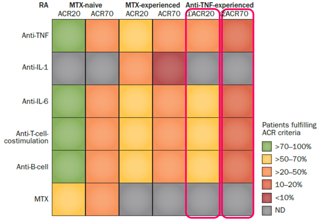

TNF-IRに対し、ACR70ではnonTNFとTNF阻害薬の効果は変わらない？
RA患者で異なる治療を行った際の一般的なACR20とACR70の反応率

①TNF-IRに対してACR20では、nonTNFはTNF阻害薬よりも効果が高い
②TNF-IRに対してACR70ではnonTNFとTNF阻害薬は効果は変わらない

この点から、EULAR RecommendationsではPhaseⅢでTNF阻害薬が駄目でも次のTNF阻害薬と書かれている
本当にそうなのか？
Smolen, J. S. & Aletaha, D. Nat. Rev. Rheumatol. 11, 276–289 (2015);